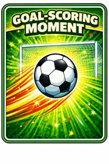
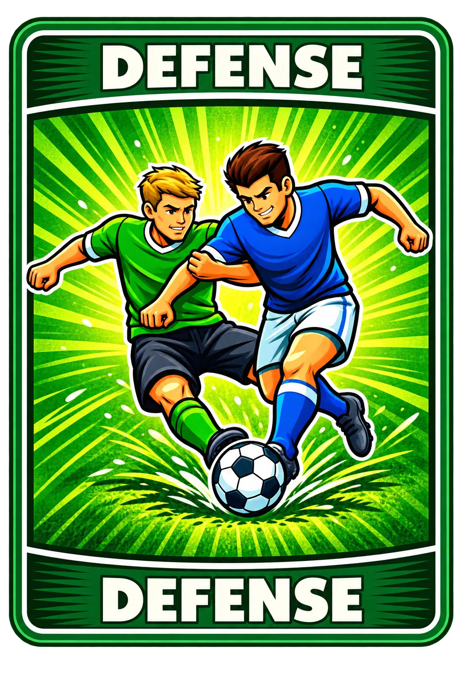

Casual Party Mode is a free-for-all. There are no teams. The Goalkeeper has no special ability in this mode.
🏆WINLast active player wins.
🃏START WITH 5Every player starts with exactly 5 Action Cards.
⚽SOCCER = DANGERYour second Soccer Strike eliminates you.
🎴PLAY FIRSTPlay any legal Action Cards before your own draw.
⬇️DRAW LASTYour own final draw ends your turn.
IMPORTANT — REMEMBER THE FUNCTION, NOT THE WORD
🧠🎴
DON'T PLAY THESE CARDS LIKE REAL SOCCER
In Casual Party Mode, the words printed on the cards are just labels. Do not worry about what those words normally mean. Just remember what each card does in this mode.
SOCCERDanger card · second Strike = OUT.
DEFENSEProtect yourself when you draw SOCCER.
DRIBBLE PASTLook at the top 3 cards. Do not reorder.
SHOOTMake yourself or another active player draw 1.
TACKLESteal 1 random card from another player's hand.
YELLOWCancel the immediately previous Action/effect.
REMEMBER: Do not use the card name's real-world meaning to decide what the card does. In Casual Party Mode, use the function shown on this page.
1 — SET UP THE GAME IN THIS EXACT ORDER
Set the SOCCER card aside while you prepare the starting hands. Do not deal SOCCER as one of the starting 5 cards.
Shuffle DEFENSE, DRIBBLE PAST, SHOOT, TACKLE, and YELLOW together.
Each player starts with exactly 5 Action Cards. Keep your hand hidden from the other players.
Put all remaining Action Cards face-down in the middle. This stack is the Draw Pile.
Put SOCCER somewhere below the top card of the Draw Pile. SOCCER may never be placed on top.
Leave a space beside the Draw Pile. Played Action Cards go here after their effects or reaction chains are fully resolved.
No special method is required. Choose a starting player, then continue in the agreed turn order. Skip any eliminated players.
PLAYER 1
PLAYER 2
PLAYER 3
PLAYER 4

DISCARD
BEFORE TURN 1: everyone has 5 Action Cards, SOCCER is inside the Draw Pile but not on top, and the Draw Pile and Discard Pile are clearly separated.
2 — YOUR TURN: FOLLOW THESE STEPS EVERY TIME
1DO NOT DRAW YETLook at the Action Cards already in your hand.
→
2PLAY ACTIONS — OPTIONALYou may play any legal Action Cards you want, one at a time, or play none at all.
→
3FINISH EACH EFFECTFully resolve the current Action or YELLOW chain before playing another Action Card.
→
4DRAW EXACTLY 1When you are finished playing Actions, take the top card of the Draw Pile.
→
5RESOLVE IT · TURN ENDSNormal Action Card → add it to your hand. SOCCER → resolve it immediately. Then the next active player begins.
VERY IMPORTANT: A draw caused by SHOOT is a forced draw. It does not end the original active player's turn. Only the active player's own final draw ends that turn.
3 — WHAT DOES “DRAW 1” MEAN?
TAKE EXACTLY THE TOP CARD
Take 1 card from the top of the face-down Draw Pile. Do not choose from the middle. Do not take from the Discard Pile. If it is an Action Card, add it to your hand. If it is SOCCER, stop and resolve SOCCER immediately.
4 — SOCCER = DANGER
DRAW SOCCER TWICE AND YOU'RE OUT
Whenever you draw SOCCER — either on your own final draw or because SHOOT forced you to draw — resolve it immediately.
0SAFE
→11ST STRIKE · STILL IN
→22ND STRIKE · OUT
WHEN SOCCER IS DRAWN
Do not continue the current Action or turn until the SOCCER draw is resolved.
Only the player who drew SOCCER may play DEFENSE against that draw.
Discard the DEFENSE card. You take no new Soccer Strike. Then return SOCCER to position 2 or deeper in the Draw Pile.
First Strike: stay in. Second Strike: OUT. After resolving, put SOCCER back below the top card.
SOCCER MAY NEVER BE PUT BACK ON TOP. Return it to position 2 or deeper so another card remains above it.
5 — CARD FUNCTIONS
LOOK AT THE CARD IMAGE · REMEMBER ONLY THIS FUNCTION

🛡️ DEFENSE
Play DEFENSE when you draw SOCCER. It prevents that draw from giving you a new Soccer Strike. Discard the DEFENSE card, then return SOCCER below the top card.
PROTECTS THE SOCCER DRAWER
👀 DRIBBLE PAST
Look at the actual top 3 cards of the Draw Pile. Card #1 is the next card that will be drawn. Do not move or reorder the cards. Put all 3 back in exactly the same order.
LOOK 3 · DON'T REORDER🎯 SHOOT
Choose yourself or any other active player. The chosen player immediately draws exactly 1 card from the top of the Draw Pile. After that forced draw is resolved, your turn continues.
FORCED DRAW ≠ TURN END
✋ TACKLE
Choose another active player with at least 1 card in hand. Steal exactly 1 random card from that player's hand and add it to your own hand. TACKLE does not steal SOCCER in this mode.
STEAL 1 RANDOM HAND CARD🚫 YELLOW
Cancel the immediately previous Action/effect before it fully resolves. YELLOW can also cancel another YELLOW, so the chain may continue.
YELLOW CAN CANCEL YELLOW⚽ SOCCER
This is the danger card. Draw it and either use DEFENSE or take a Soccer Strike. Your second Soccer Strike eliminates you.
2 STRIKES = OUT6 — YELLOW CHAIN
YELLOW cancels the immediately previous Action or effect before it fully resolves. Another YELLOW can cancel that YELLOW.
SHOOT PLAYED
→
YELLOW CANCELS SHOOT
→
2ND YELLOW CANCELS 1ST YELLOW
→
✅
SHOOT GOES THROUGH AGAINResolve the chain from the newest YELLOW backward to determine whether the original Action happens.
7 — FULL FIRST-TURN EXAMPLE
PLAYER 1 STARTS WITH 5 ACTION CARDS
1 · NO DRAW YETPLAYER 1 looks at the 5 Action Cards already in hand.
→
2 · PLAY DRIBBLE PASTLook at the top 3 cards, then return them in the same order.
→
3 · PLAY SHOOTPLAYER 1 chooses PLAYER 3.
→
4 · PLAYER 3 DRAWS 1This is a forced draw caused by SHOOT.
→
5 · PLAYER 1 STILL ACTSThe forced draw did not end PLAYER 1's turn.
→
6 · PLAYER 1 DRAWS 1When PLAYER 1 is finished playing Action Cards, PLAYER 1 takes the top card of the Draw Pile.
→
7 · TURN ENDSResolve PLAYER 1's own draw. Then PLAYER 1's turn ends and the next active player begins.
8 — ELIMINATION, WINNING & EMPTY DRAW PILE
When you receive your second Soccer Strike, you are OUT immediately. Discard all remaining Action Cards in your hand. You take no more turns and can no longer be targeted.
Play continues with the remaining active players. The last active player wins.
Keep the top card of the Discard Pile separate. Shuffle the other discarded Action Cards into a new face-down Draw Pile, then continue.
Whenever SOCCER returns to the Draw Pile, place it at position 2 or deeper. Never put SOCCER on top.
QUICK FAQ
DO I DRAW AT THE START OF MY TURN?No. Play any Action Cards you want first. Your own draw happens after you are finished playing Action Cards.
CAN I PLAY ZERO ACTION CARDS?Yes. You may play no Action Cards and go straight to your own final draw.
DOES SHOOT'S FORCED DRAW END MY TURN?No. The original active player continues after the forced draw resolves.
CAN YELLOW CANCEL YELLOW?Yes. Each YELLOW cancels the immediately previous card/effect.
DOES TACKLE STEAL SOCCER?No. In Casual Party Mode, TACKLE steals 1 random card from another player's hand.
DOES GOALKEEPER HAVE A SPECIAL POWER?No. There is no Goalkeeper special ability in Casual Party Mode.